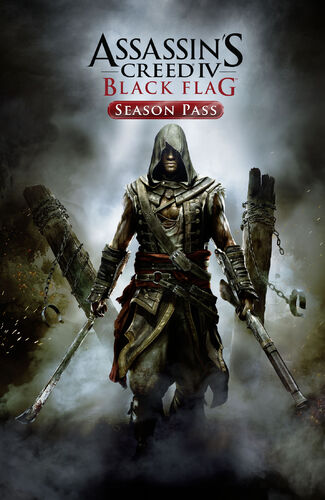

Developer: Ubisoft Québec
Platform: Xbox 360, Xbox One, PlayStation 3, PlayStation 4, PC
While attempting to intercept Templar activities in the Caribbean Sea, Adéwalé is shipwrecked off the coast of Haiti. Making his way into Port-au-Prince, he establishes that the Templars are working with Bastienne Josèphe, the proprietor of a local brothel and a sympathizer to the Maroons, a faction of freedom fighters made up of liberated slaves led by Augustin Dieufort. Despite his obligations to the Brotherhood of Assassins, Adéwalé becomes sympathetic to their cause, and joins with the Maroons in hijacking a vessel, the Experto Crede, in order to interrupt the slave trade.Whilst working for Bastienne, Adéwalé begins to uncover a conspiracy within the French provincial government ruling Port-au-Prince. The local governor, Pierre de Fayet, plans a clandestine scientific expedition to measure the curvature of the earth and gather geographical data, which they intend to sell to the highest bidder with the promise of naval superiority. Adéwalé successfully sabotages the expedition by substituting the illiterate slaves being used by the expedition for literate members of the Maroons.